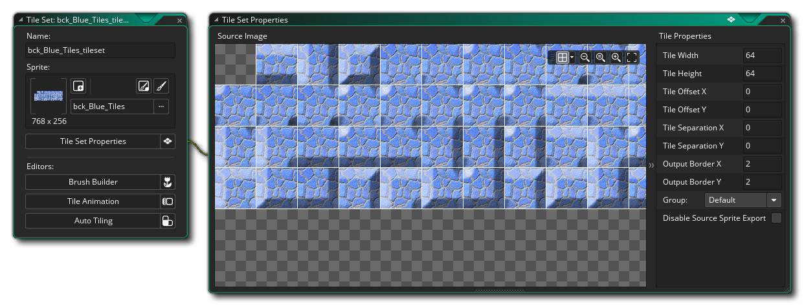
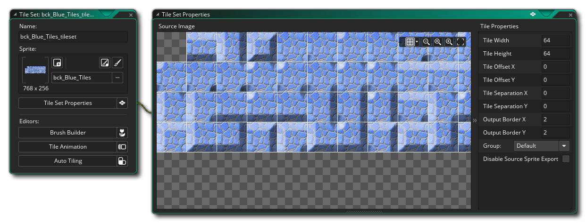

图块集 是以精灵为基础创建的，但是它们被分类为独立的资源，因为 GameMaker Studio 2 处理图块集的方式与精灵以及物体有点不同。从本质上讲，图块只是一个简单的图形资源，只需要很少的 CPU / GPU 运算就可以绘制到屏幕上，这使得它们成为设计制作所有静态项目的理想选择，图块集 是在一个精灵中统一创建的图块的集合。图块 只能是矩形 或 正方形 （如果你想要其他形状，那么你需要创建一个普通的精灵，并使用房间编辑器中的 资源层 ，相关内容我们将在后面讨论）。在这个快速入门指南中，我们将看到一个用于在上帝视角游戏中制作墙面的图块。
首先，我们需要一个图块集的图像，可以在精灵编辑器/图像编辑器中完成，最终的精灵看起来像是这样： 
请注意，该图像中的第一个图块是空白的。GameMaker Studio 2 中存储房间的地图的方式意味着第（0）个图块总是 空白的，因为它本质代表了“删除”或“空白”。所以，在创建地图的时候，左上角的图块总是为空。 还要注意的是，虽然上面的图片显示了一个镶满 47 块图块的完整墙面砖，但你可能不需要这么多，因为稍后将它们放置在房间编辑器中时，你可以旋转和翻转图块。
创建一个精灵后，我们可以继续来定义图块集，你需要先通过右键单击  图块集资源文件夹并选择 创建 来创建新的图块集资源。之后会打开 图块集编辑器，然后添加精灵并设置其属性：
图块集资源文件夹并选择 创建 来创建新的图块集资源。之后会打开 图块集编辑器，然后添加精灵并设置其属性：
我们已经将图块集的大小设置为32px，并且将其余的值保持为默认值，因为我们不需要偏移或其他类似的操作。 你现在可以关闭图块集编辑器，并且你可以使用图块集“按原样”在房间编辑器中创建图块层。 如果你想了解更多关于图块集编辑器的高级功能的信息，请参阅手册的相关章节。 现在我们来继续为你的项目创建声音效果...